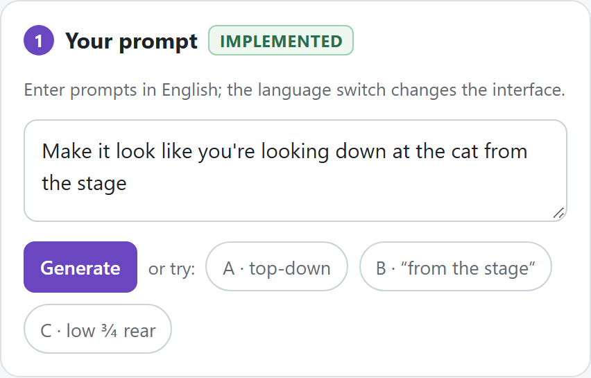
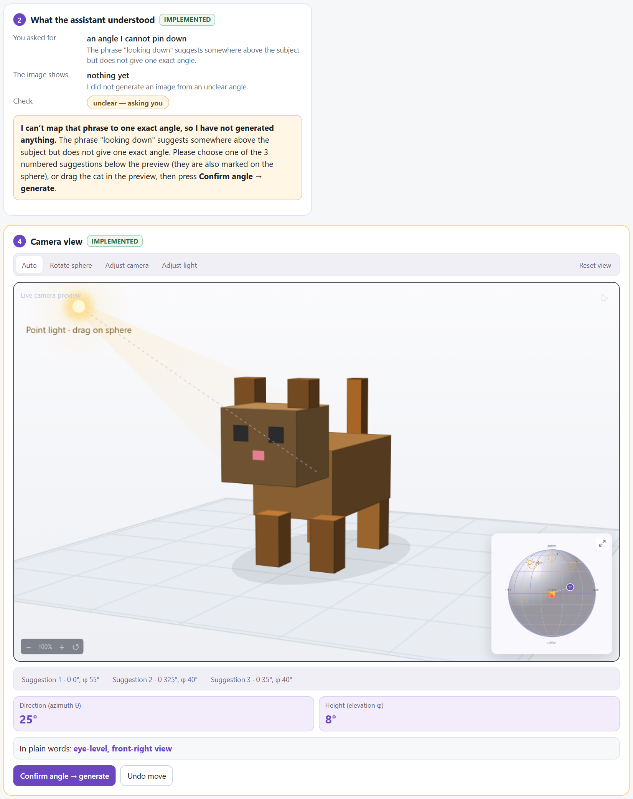
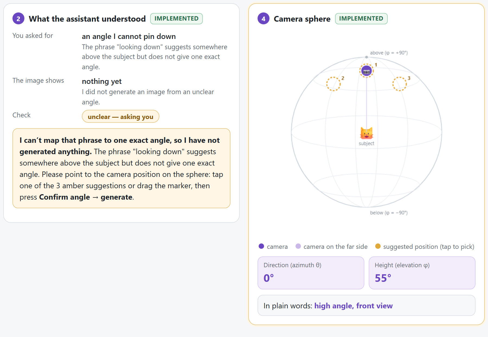
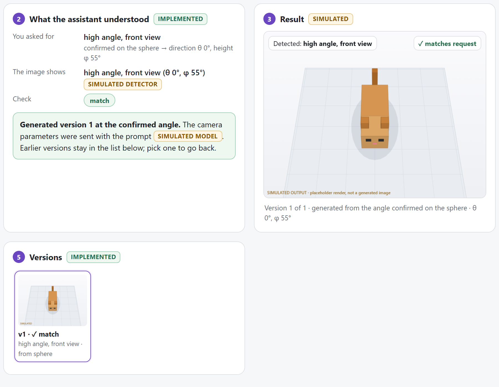

Person describes the angle as a scene (“looking down from the stage”). The assistant does not turn it into a literal angle.
Frames are screenshots of prototype/index.html (day mode). implemented runs in the prototype · simulated stand-in for the image model and the viewpoint detector (placeholder 3D render).




Viewpoint Assistant · Assignment 2 · every image in the frames is a simulated placeholder, not a generated image.